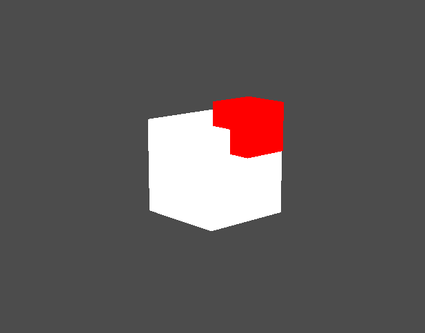
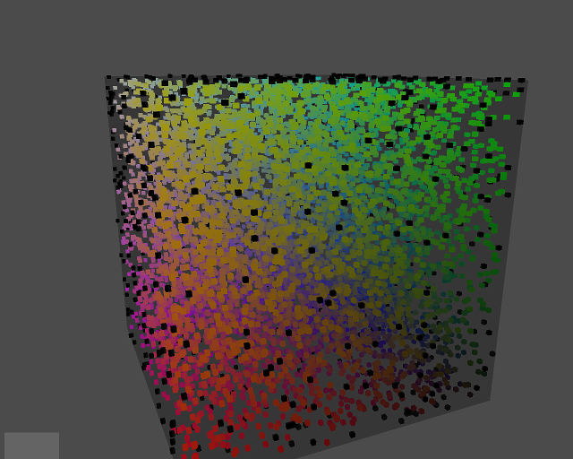
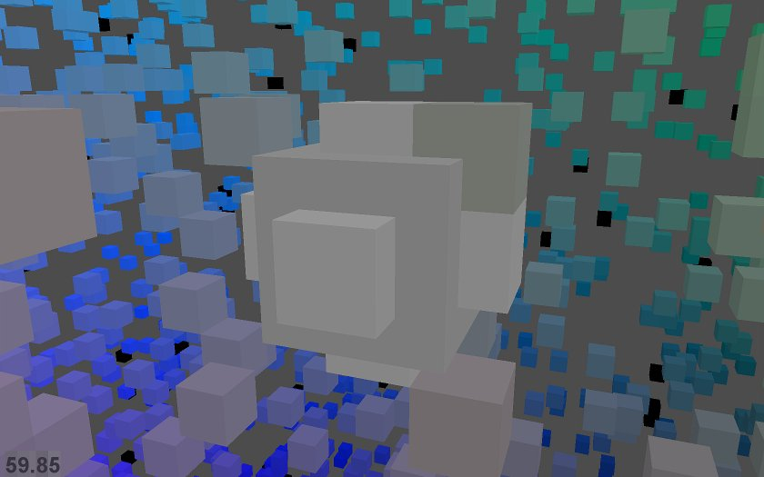

More OpenGL from Python
My talk, Flying High : Hobbyist OpenGL from Python, was accepted for EuroPython 2010, \o/. I don't want to reveal the best bits of my talks, but to whet people's appetite, this is some of what my initial preparation involved.
One thing I'm keen on talking about is algorithmic generation of interesting geometry. This is an area in which the flexibility and expressiveness of Python can really shine.
I started with a quick Shape class, to model the vertices and faces of an arbitrary polyhedra (3D shapes with flat faces and straight edges):
Position = namedtuple('Position', 'x y z') class Shape(object): def __init__(self, vertices, faces, color): self.vertices = [Position(*v) for v in vertices] self.faces = faces self.color = color
Each face of the shape is represented as a list of integer indices into the vertex list. The 'faces' attribute is a list of all faces. The color attributes is just a 4 element tuple: (r, g, b, alpha). This class can now be instantiated by factory functions to form particular 3D shapes, such as red cubes or blue tetrahedrons:
def Cube(edge, color): verts = [ (-edge/2, -edge/2, -edge/2), (-edge/2, -edge/2, +edge/2), (-edge/2, +edge/2, -edge/2), (-edge/2, +edge/2, +edge/2), (+edge/2, -edge/2, -edge/2), (+edge/2, -edge/2, +edge/2), (+edge/2, +edge/2, -edge/2), (+edge/2, +edge/2, +edge/2), ] faces = [ [0, 1, 3, 2], # left [4, 6, 7, 5], # right [7, 3, 1, 5], # front [0, 2, 6, 4], # back [3, 7, 6, 2], # top [1, 0, 4, 5], # bottom ] return Shape(verts, faces, color)
A class called 'Glyph' will convert a Shape instance into the set of ctypes arrays that need to be passed to OpenGL:
The real Glyph class also creates arrays for color, and array indexes as well as vertices.
Finally, we have a renderer, whose 'draw' method is invoked by our window draw event. This iterates through all items in our world that have a Glyph attribute, drawing each of them:
def draw(self, items): for item in items: gl.glPushMatrix() gl.glTranslatef(*position) # TODO: orientation gl.glVertexPointer(3, gl.GL_FLOAT, 0, item.glyph.glVerts) gl.glColorPointer(4, gl.GL_FLOAT, 0, item.glyph.glColors) gl.glDrawElements( gl.GL_TRIANGLES, # draw disjoint triangles len(glyph.glIndices), # number of vertices to draw gl.GL_UNSIGNED_SHORT, # type of indices glyph.glIndices) # index array gl.glPopMatrix()
So we add a couple of interpenetrated Cube() shaped items into our world:
white = (1, 1, 1, 1) red = (1, 0, 0, 1) world.add( GameItem( position=Position(0, 0, 0), shape=Cube(2, white), glyph=Glyph(), )) world.add( GameItem( position=Position(1, 1, 0), shape=Cube(1, red), glyph=Glyph(), ))
and running the program renders them:

The flat shading is because we have no lighting yet. That gets fixed soon.
Each cube is being drawn by a separate call to glDrawElements. This is fine for small numbers of items, but for performance we'll want to compose our geometry into single arrays that can be rendered by a single call to glDrawElements. To do this, we create a CompositeShape object, that contains several Shapes, and exposes 'vertices' and 'faces' attributes just like a regular Shape, which aggregate the geometry of all their subordinate Shapes.
class CompositeShape(object): def __init__(self): self.children = [] def add(self, child, offset=None): if offset is None: offset = Position(0, 0, 0) self.children.append((child, offset)) @property def vertices(self): return (vert + offset for shape, offset in self.children for vert in shape.vertices)
(The real CompositeShape class also defines 'faces', which is elided here.) Instances of CompositeShape can be passed directly to our unmodified Glyph class, allowing us to construct complex geometries out of many individual parts, but now they are all rendered in a single OpenGL API call.
A new factory function creates a fancy CompositeShape called a CubeCluster, consisting of many randomly-positioned small cubes, each one colored by its position in (r, g, b) space. These are surrounded by a sprinkling of black cubes, a large translucent cube-shaped skin:

and buried deep at the centre of the CubeCluster is some sort of mysterious structure:

So using this code, I get 60fps on modest hardware (my 2005 end-of-line Thinkpad T60, an ATI Radeon X1400) while rendering either:
- 800 independently moving and rotating items, each a simple cube (8 vertices, 8 colors, no normals, 36 indices = 12 triangles) for a total of 9600 triangles.
or
- 1 composite item comprising 9,000 cubes, (108,000 triangles)
or any linear interpolation between these two extremes. (Update: see improvement on this noted in the final paragraph.)
I've done nothing to try and tune the performance, in particular I'm updating and rendering every single item every frame, and I'm not using vertex buffers, so I suspect my geometry is being sent over the bus to the GPU every frame. So presumably this can be still be much improved.
Next I add some basic lighting, so that our cubes don't look so flat shaded. Lighting needs to know normals, the vector at right angles to a face, so that it can figure out how how strongly each face is illuminated. So our Glyph needs to start generating an array of normals for each vertex.
def get_normal(face, vertices): v0 = vertices[face[0]] v1 = vertices[face[1]] v2 = vertices[face[2]] a = v0 - v1 b = v2 - v1 return b.cross(a) class Glyph(object): def get_glnormals(self, shape): face_normals = (get_normal(face, shape.vertices) for face in shape.faces) normals = (normal for face, normal in zip(shape.faces, face_normals) for index in face) return gl_array(gl.GLfloat, normals, self.num_glvertices * 3)
This generation of normals also affects the generation of vertex positions, colors and indices, since vertices can no longer be shared between different faces of a cube, because a single vertex position now requires a different normal for each face.

Generating normals made me think more about when I should or should not be using indexed vertex arrays, as opposed to simple contiguous arrays of vertices. My current thoughts on the matter are summarised on this stackoverflow question. If you know a bunch about OpenGL, I'd appreciate you heading over there and setting me straight.
Adding normals increased the vertex count required to draw the same geometry quite considerably, from 8 vertices for a single cube, up to 24. The colors array increases in size correspondingly. Surprisingly, this didn't decrease framerate too much (we went from drawing 9,000 cubes at 60fps down to 8,000.) However, then I converted colors from being floats (eg. white=(1.0, 1.0, 1.0, 1.0), four components for rgb and alpha)) to using unsigned bytes (e.g. white=(255, 255, 255, 255).) This boosted performance noticeably, so now we're up to drawing 12,000 cubes at 60fps, with normals and lighting.
Next up is to start generating some more interesting geometry, other than just a bunch of cubes...
Update: The code that generated the above screenshots is in a Mercurial repo at:\ http://code.google.com/p/flyinghigh-opengl-from-python/
Only the "code" directory is of any interest (the rest is just a dumping ground for my thoughts related to the text of the talk.) There is a hastily-created README in the code directory.
In particular, note that the code may spend a while generating geometry on startup, before displaying anything. This startup time has been fluctuating wildly, as I add new ideas, then refine them to be reasonably performant. To improve performance or startup time, you might want to take a look in the 'flyinghigh/populate_world.py' module and comment out the creation of some of the GameItem instances that are passed to world.add().
Feedback, ideas and questions all welcome.